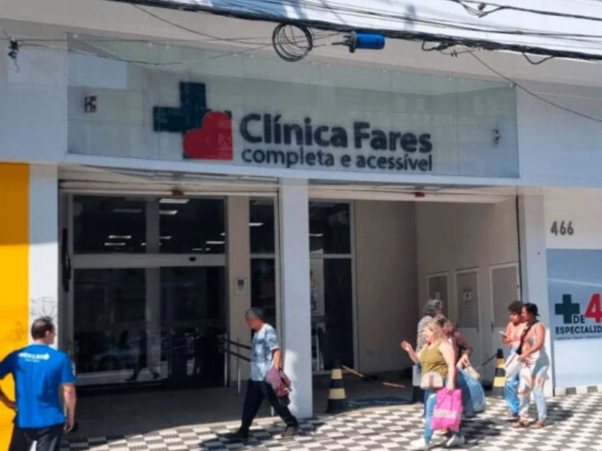

Avaliação
Conversa, exame da mão e, quando preciso, exames de imagem ou eletroneuromiografia, que mede como o nervo conduz o estímulo.
Você sai sabendo o que foi encontrado e quais são os próximos passos.
Ortopedista e cirurgião da mão em Osasco, com atendimento em Barueri, Alphaville e região.
Dr. Pedro Sarzi · Médico · CRM-SP 183.332 · RQE 110447
Toque no que você sente para ver o que pode estar por trás.
Imagens conceituais ilustrativas.
Na lateral do punho ou na base do polegar
Dor
O que observar
Piora ao torcer o punho, fazer pinça ou pegar peso.
Pode estar ligado a
Conteúdo educativo; a avaliação considera o seu caso.
Do polegar ao anelar
Formigamento
O que observar
Costuma piorar à noite ou ao segurar o celular e o volante.
Pode estar ligado a
Conteúdo educativo; a avaliação considera o seu caso.
A mão adormece
Dormência
O que observar
Você sacode a mão para voltar ao normal. Depois de um corte, um dedo pode ficar dormente.
Pode estar ligado a
Túnel do carpoLesões de tendão
Conteúdo educativo; a avaliação considera o seu caso.
Objetos escapam da mão
Perda de força
O que observar
Abrir potes, girar a chave ou segurar a xícara fica difícil.
Pode estar ligado a
Conteúdo educativo; a avaliação considera o seu caso.
O dedo trava dobrado
Travamento
O que observar
O dedo pode travar dobrado e precisar da outra mão para esticar; às vezes, estala ao soltar.
Pode estar ligado a
Conteúdo educativo; a avaliação considera o seu caso.
Um clique ao mexer o dedo
Estalo
O que observar
O clique pode vir com travamento e dor na base do dedo, às vezes mais forte ao acordar.
Pode estar ligado a
Conteúdo educativo; a avaliação considera o seu caso.
No punho ou na palma
Caroço
O que observar
Um caroço macio no punho ou um nódulo firme na palma da mão.
Pode estar ligado a
Conteúdo educativo; a avaliação considera o seu caso.
Dor, inchaço ou dedo que não dobra
Depois de queda ou corte
O que observar
Um dedo torto, uma dor que não passa ou um dedo que perdeu o movimento.
Corte com dedo que não dobra ou dormente: procure atendimento no mesmo dia.
Pode estar ligado a
Conteúdo educativo; a avaliação considera o seu caso.
Toque na região da mão ou escolha uma condição. Cada uma mostra o que é, os sinais e os caminhos de tratamento.
Toque nos pontos da mão
O nervo mediano, que dá sensibilidade a parte dos dedos, fica apertado dentro de um canal estreito do punho, o túnel do carpo.
Conforme a avaliação. Nem todo caso passa por todas as etapas.
O tendão que dobra o dedo engrossa e passa com dificuldade pela polia, um anel que o mantém junto ao osso.
Conforme a avaliação. Nem todo caso passa por todas as etapas.
Inflamação de dois tendões do polegar dentro de um túnel estreito na lateral do punho. É frequente depois do parto e em movimentos repetidos de pinça.
Conforme a avaliação. Nem todo caso passa por todas as etapas.
Desgaste da cartilagem (artrose) na articulação da base do polegar. É mais comum em mulheres depois da menopausa.
Conforme a avaliação. Nem todo caso passa por todas as etapas.
Uma bolsa de líquido ligada a uma articulação ou a um tendão. É benigno, pode mudar de tamanho e parte deles regride sozinha.
Conforme a avaliação. Nem todo caso passa por todas as etapas.
Bater com um livro não é tratamento e pode causar lesão.
O tecido sob a pele da palma (fáscia) engrossa e forma nódulos e cordões que, com os anos, puxam o dedo para dentro.
Conforme a avaliação. Nem todo caso passa por todas as etapas.
Quebra de um osso dos dedos, da mão ou do punho, em geral depois de queda ou pancada. A do escafoide, um pequeno osso do punho, pode não aparecer no primeiro raio-X.
Conforme a avaliação. Nem todo caso passa por todas as etapas.
Os tendões ligam os músculos aos ossos e movem os dedos. Um corte, mesmo pequeno, ou uma pancada na ponta do dedo pode rompê-los.
Conforme a avaliação. Nem todo caso passa por todas as etapas.
Depois de um corte, se o dedo não dobra ou ficou dormente, procure atendimento no mesmo dia.
Cinco perguntas para organizar o que você sente. É uma orientação educativa e não substitui a consulta.
Pergunta 1 de 5
Cirurgia da mão, com especialização pela UNESP e formação em ortopedia e traumatologia.
Há 10 anos na medicina, atende em Osasco pessoas com dor, formigamento, travamento e lesões da mão e do punho. Em cada consulta, explica o que encontrou e os caminhos possíveis, para que a decisão seja tomada junto com você.
Nem todo caso passa por todas as etapas. A avaliação define o que faz sentido para você.
Conversa, exame da mão e, quando preciso, exames de imagem ou eletroneuromiografia, que mede como o nervo conduz o estímulo.
Você sai sabendo o que foi encontrado e quais são os próximos passos.
Órtese (tala feita para a sua mão), fisioterapia, ajuste das atividades e medicação.
Em muitos casos, o tratamento começa por aqui.
Aplicação de medicação no ponto da inflamação, às vezes guiada por ultrassom.
Indicada em casos selecionados, conforme a avaliação.
Para liberar um nervo, reparar um tendão ou fixar uma fratura. A microcirurgia usa ampliação óptica para trabalhar em estruturas pequenas, como nervos e vasos.
Só quando indicada. A decisão é tomada junto com você, com a recuperação explicada antes.
Exercícios e acompanhamento para recuperar movimento e força.
O tempo varia conforme cada caso.
Do primeiro contato ao plano de cuidado, em quatro passos.
Escolha um horário pelo botão de agendamento ou ligue para a central da Clínica Fares.
Central da clínica · (11) 3851-4000
Se tiver, reúna exames de imagem, laudos e a lista de medicamentos. Se não tiver exames, tudo bem: a avaliação começa pela conversa e pelo exame físico.
Uma dica · Anote quando o sintoma aparece e o que costuma piorá-lo.
O Dr. Pedro escuta o que mudou na sua rotina, examina a mão e o punho e explica os achados com clareza.
Com atenção · Sintomas, movimento, sensibilidade e força.
Você entende as opções indicadas para o seu caso, o que cada uma envolve e como seguir, sem pular etapas.
Plano individual · Exames, tratamento e retorno, conforme a avaliação.
Em três locais, em Osasco e em Alphaville. Veja em que dia ele está em cada um.
Os sábados de atendimento são dois por mês: confirme a data ao agendar.
Rua Antônio Agú, 630, Centro, Osasco
Segunda, quarta, quinta, sexta e dois sábados por mês
Alphaville
Segunda, das 17h às 19h
Osasco
Quinta, das 17h às 20h
Toque no nome de um local para ver só os dias dele na agenda.
Envie uma mensagem e combine o local, o dia e o horário da avaliação.
Agendar avaliação
Veja o local no mapa sem sair da página.
O mapa é carregado do Google quando você toca no botão.